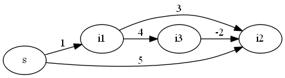

Bellmanford calculator
What algorithm is used?
This calculator uses Bellmanford's algorithm,
which follows the pseudo-code below.
bellmanford(){
for(i ∈ {all nodes}) d[i] ← (i == s ? 0 : ∞)
for(i ∈ {all nodes}) pre[i] ← (i == s ? s : Ø)
V_T ← {s}
while(V_T ≠ Ø){
Select i ∈ V_T
V_T ← V_T ＼ {i}
for(j ∈ {All nodes adjacent to i}){
if(d[j] > d[i] + c[i][j]){
d[j] ← d[i] + c[i][j]
pre[j] ← i
V_T ← V_T ∪ {j}
}
}
/*
For every node in each loop, display the result.
(The result is printed in the form "d[i](pre[i])")
*/
}
}
How to use?
Please enter the information for one edge per line,
separated by one space.The names of the nodes are optional,
as long as they are no more than 8 characters long.
If there is an edge of weight w from node 'a' to node 'b', the input will look like "a b w".
(Example)
The example input for the following directed graph is given
as an initial value in the input form.

Caluculate!!
Constraints
・The maximum length of a node name is 8.
・The weight of an edge is less than 10^9.
・The maximum number of loops displayed, nodes and edges are all 100.
Note
・The nodes marked in red in the table are the elements of V_T in the above algorithm.
・You can get the source code here.
・References